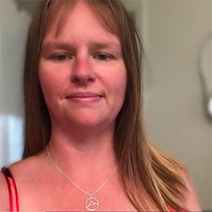

About Me

I earned a Master of Science in Graphic Information Technology, with a concentration in user experience design principles, in May of 2022, and have a Bachelor of Applied Science in Internet and Web Development. I have over 8 years of industry experience with a strong track record of success and a great reputation as someone who delivers on promises.
I have a passion for helping others. I currently volunteer weekly with a non-profit food rescue organization called Waste to Taste.
When I'm not working or volunteering, I love to garden, kayak, and any other reason to be outdoors.